Like in Huffman compression (the compression part of DPCM), the PMIC
compression algorithm should be performed on the quantized differential
image. However, the algorithms seen above are well adapted to Huffman
coding, because they deal on a pixel-by-pixel basis. Unfortunately, the
PMIC algorithm, proceeds several pixels at a time (i.e., the longest prefix
found in the database). Besides, we do not know in advance what the length
of this prefix will be. But, there is a way around all of those problems.
In fact, if we consider the PREDICTION algorithm to be performed, not
on a pixel basis, but on a cell (which is, in the case of DPCM, one single
pixel) basis, then this algorithm needs just a few adaptations in order to
be suited for PMIC: in this latter, the cell becomes naturally the longest
prefix found in the database.
These considerations lead to the algorithms given below, which should
replace the PREFIX and COMPRESS_ROW algorithms
for more detail) respectively:
Algorithm DIFFERENTIAL_PREFIX
Input:
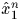
, ex1n (where n=fN), and y1N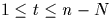
),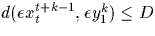
. The algorithm outputs both k and t, as well as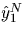
and ey1N, both returned by the call to the PREDICTION_LOOP algorithm.begin Call PREDICTION_LOOP on x1N Let and ey1N be returned by this call to PREDICTION_LOOP. Initialize all Sij := 0. for i=1 to n-N do for j=1 to N do Compute Sij := Si,j-1 + d(exi+j-1, eyj) doend doend Let k be the largest j such that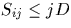
, and let t be the corresponding i Output k and t end
One should note that the PREDICTION_LOOP algorithm is here used on generally more pixels than needed, since it is used on N pixels, and that the longest prefix will have a size
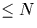
.Algorithm COMPRESS_DIFFERENTIAL_ROW
Input: , ex1n (where n=fN), y1N.
Output: A compressed version of ey1N, in the form of
(pointer,length) pairs, and the new reconstructed portion,
, of the database.
Method: We use PREFIX to ``peel off'' a prefix
of the row being compressed, and repeat on the remaining
portion of that row until we use it all up.
begin Initialize i := 0. Repeat the following until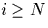
Call PREFIX on , ex1n and yi+1N Let k and t,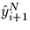
and eyi+1N, be returned by this call to PREFIX If k is small (say,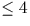
) then eyi+1i+k is stored explicitly, else eyi+1i+k is stored as a (pointer,length) pair, Compute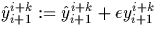
(addition of vectors). Set i := i+k end
We have used here the notation ex and ey for x and y, as they are understood in the COMPRESS_ROW algorithm of [2] and discussed briefly above, except that what is now compressed is the quantized differential image, whence the e before x and y. Therefore, represents the reconstructed (``predicted'') database (and is, in fact, the image as it will be again after decompression); ex1n means the database of the differential image (image actually being compressed); y1N is the currently processed row of the original image; ey1N is the ``differential'' row currently being compressed, that is, the differential pendant of y1N; and is the new portion of the reconstructed (``predicted'') database. Thus,
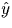
leads to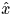
, and ey gives ex.
| JPEG | Const D | Var D | PMIC-PL | |
| Compression ratio | 10.03 | 9.99 | 10.01 | 10.04 |
| Bit rate (bits/pixel) | 0.8 | 0.8 | 0.8 | 0.8 |
| RMSE (0-255) | 4.65 | 8.90 | 8.44 | 15.97 |
| PSNR (dB) | 34.78 | 29.14 | 29.61 | 24.06 |
| JPEG | Const D | Var D | PMIC-PL | |
| Compression ratio | 9.96 | 10.04 | 10.04 | 9.96 |
| Bit rate (bits/pixel) | 0.8 | 0.8 | 0.8 | 0.8 |
| RMSE (0-255) | 9.07 | 12.22 | 8.44 | 78.89 |
| PSNR (dB) | 28.97 | 26.39 | 29.61 | 10.19 |
| JPEG | Const D | Var D | PMIC-PL | |
| Compression ratio | 10.03 | 10.00 | 9.95 | 10.02 |
| Bit rate (bits/pixel) | 0.8 | 0.8 | 0.8 | 0.8 |
| RMSE (0-255) | 7.96 | 13.92 | 12.87 | 20.41 |
| PSNR (dB) | 30.11 | 25.26 | 25.94 | 21.94 |
Finally, we present some experimental results. We summarize them in Tables 2--4 where JPEG, PMIC with constant and variable D, and PMIC-PL (PMIC with Prediction Loop) are compared for three images, namely: ``Lena'' image, ``Basselope'' image (a graphic image) and ``San Francisco'' image (a photographic image). We conclude that prediction, as discussed in Section 2, can lead to substantial speed up of compression time, butter compression time without significant deterioration of image quality. More sophisticated PMIC-PL cna lead to further improvements, as our preliminary results suggest. However, results in Tables 2-4 are, in fact, worse than expected. We believe they originate from the fact that we use variable-D scheme which seems to be unsuited for the predictive loop (the derivative is actually done on the original image, and not on the differential image, as it should be). This might be an interesting point further research (i.e., to implement a good derivative scheme on the differential image). Then, we believe we can achieve much more substantial improvements. This will be reported in our journal version of this paper.